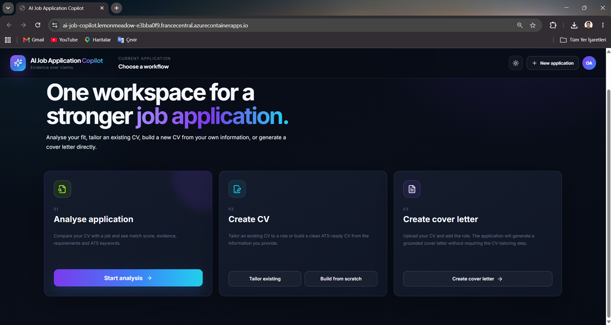
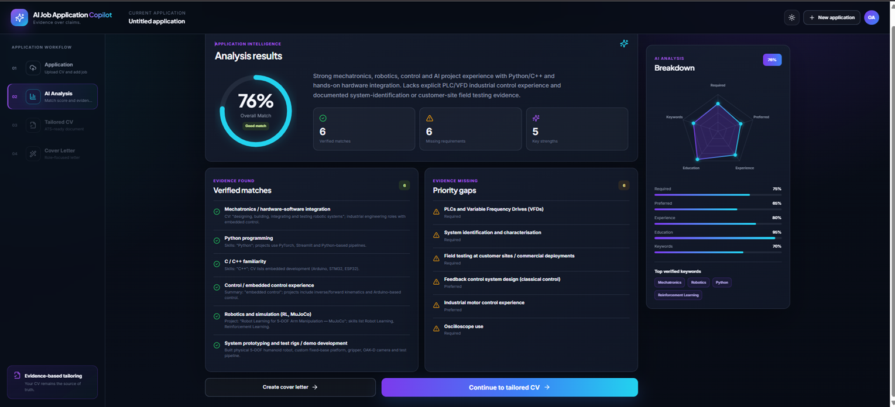
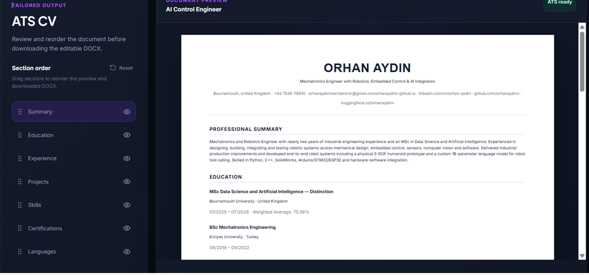
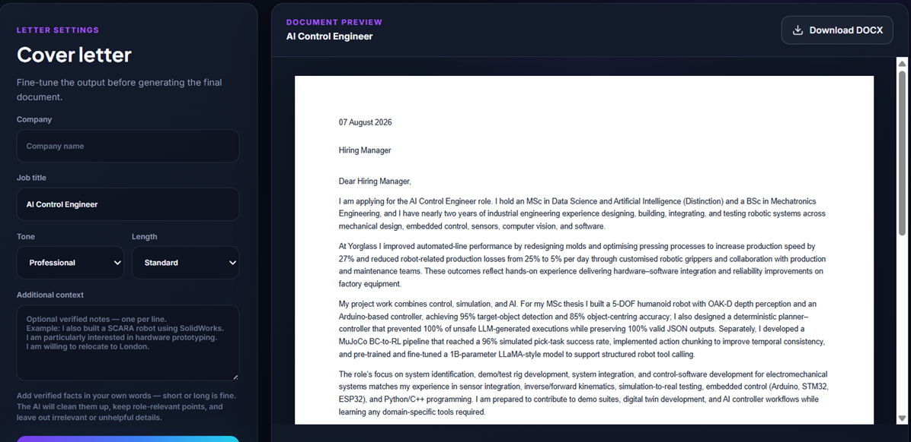
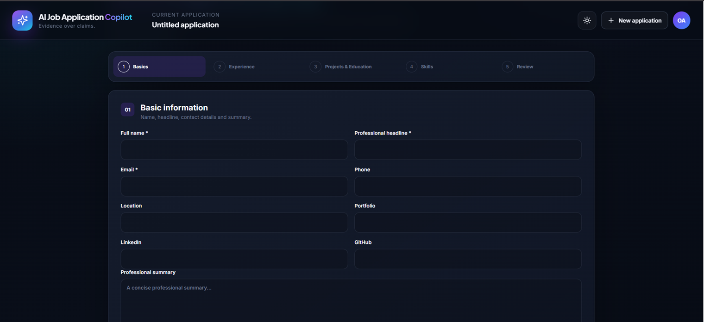

AI Job Application Copilot — Full-Stack Generative AI on Azure
An AI application that analyses CV-to-job fit and generates tailored CVs and cover letters, with evidence-backed matches, editable previews and Word document export.

Project Overview
From an existing CV to a tailored application
Job applications involve repeatedly comparing requirements, finding relevant experience and rewriting documents. I built a full-stack application that brings document extraction, job-fit analysis, CV tailoring and cover-letter generation into one workflow.
The application uses the candidate’s CV as its primary factual source, surfaces supporting evidence for matched skills and lets the user review and edit documents before exporting them.
Product Demo
Explore the complete application workflow
Upload a CV, analyse a target role, review the matches and gaps, then prepare application documents.
Job Analysis
Understand the match and the gaps

Compares required skills, preferred skills, experience, education and keywords. Evidence-backed matches and priority gaps make the result inspectable. Scores are heuristic indicators of fit, not hiring probabilities.
CV Tailoring
Turn relevant experience into a focused CV

Generates an ATS-focused CV from existing experience, with editable section titles, project and skill prioritisation, section reordering and DOCX export.
Cover Letters
Prepare a letter for each role

Combines the source CV, target job, analysis and optional user context to draft a role-specific letter. Users can adjust tone and length, preview the result and download the document.
CV Builder
Build, organise and refine a CV

Supports structured education, experience, projects, skills and certifications, drag-and-drop section ordering and optional sections. AI wording improvement is prompted to preserve the original facts and strength of claims.
Architecture
React, FastAPI and Azure OpenAI
Frontend · React + TypeScript
Document upload, analysis results, editable previews and application-building flows.
Backend · Python + FastAPI
PDF/DOCX extraction, job-description resolution, request validation, AI orchestration and document export.
AI · Azure OpenAI
Job analysis and document generation with Pydantic output parsing and prompt-based factuality constraints.
Delivery · DOCX export
Structured application content becomes downloadable Word documents through python-docx.
Grounding & Validation
Keep generated claims tied to source experience
Generated documents use the source CV as their factual basis. Model responses are parsed into typed Pydantic models, and wording instructions aim to prevent invented skills, employers, achievements, dates or metrics.
Schema validation checks output structure; it does not prove factual correctness. Generated text remains subject to user review. Stronger deterministic claim verification and claim-to-source evidence links are future improvements.
Azure Deployment
One container, one public application
A multi-stage Docker build compiles the React/Vite frontend and packages it with the Python backend. FastAPI serves both the frontend assets and API endpoints from a single public URL.
Build and registry
Docker image stored in Azure Container Registry.
Hosting and inference
Azure Container Apps hosts the application; the backend calls Azure OpenAI for analysis and generation.
Azure OpenAI credentials are supplied through backend environment variables and are not included in the frontend bundle.
Engineering Scope
An end-to-end applied AI project
This project connects frontend product development, backend APIs, document processing, structured LLM outputs, editable document generation, containerisation and cloud deployment.
Current limitations include job sites blocking URL extraction, interpretation depending on the quality of the source CV, and generated text requiring review. Planned extensions include user accounts, saved applications, stronger factuality verification and automated deployment.
Project Links